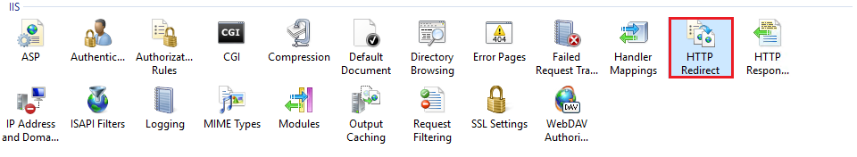
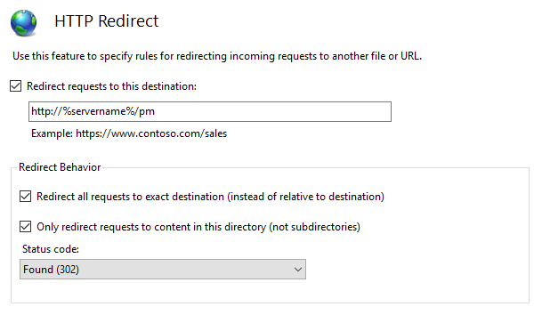
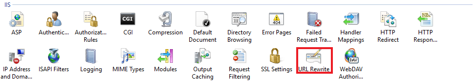
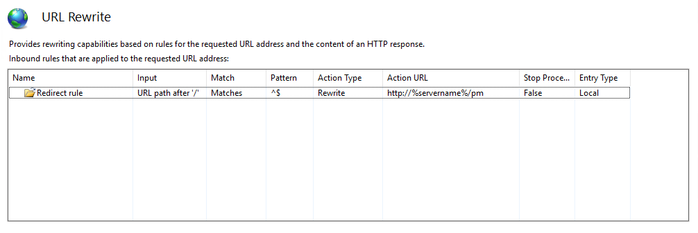

Question
I want users to access Password Manager by browsing through <servername> instead of <servername>/pm. How can I redirect users to the Password Manager website?Answer
Option 1. Change iisstart.htm file in the root folder of the default website. You will not be able to see the default web page in this case.- Locate iisstart.htm (by default at C:\inetpub\wwwroot), right-click it to select Edit.
-
Replace the preexisting text in the file with the following:
<html> <head> <meta http-equiv="Refresh" content="0; url=http://%servername%/pm"/> </head> </html>
- Save changes to the file.

Perform the following steps:
- In the left pane of IIS Manager navigate to the website with the virtual directory of the Password Manager (“PM” by default).
- Locate the HTTP Redirect icon under the IIS category to double-click it in the central pane.
- Check the Redirect requests to this destination checkbox and enter the URL to redirect to (for example, http://%servername%/pm).
- Check the Redirect all request to exact destination (instead of relative to destination) checkbox.
- Check the Only redirect requests to content of this directory (not subdirectories) checkbox.
- Set Status code to Found (302).
- Click Apply in the right pane.

Option 3. Use URL Rewrite rules. Please refer to the following link to download and install the module: http://www.iis.net/downloads/microsoft/url-rewrite.

After the installation of the URL Rewrite module, perform the following steps:
- In the left pane of IIS Manager navigate to the website with the virtual directory of the Password Manager (“PM” by default).
- Locate the URL Rewrite icon under the IIS category to double-click it in the central pane.
- Click Add rule(s)… in the right pane.
- Select Blank rule under Inbound rules and click OK.
- Enter a Name for the rule.
- In the Match URL area:
- Select Requested URL: Matches the pattern and Using: Regular expressions in the dropdown lists.
- Enter the following Pattern: ^$.
- Check the Ignore case checkbox.
- In Action area:
- Select Action: Redirect from the dropdown list.
- Enter Redirect URL (for example, http://%servername%/pm).
- Check the Append query string checkbox.
- Select Redirect type: Permanent (301) from the dropdown list.
- Click Apply and then click Back to Rules. The configured rule should be now listed.
- Restart IIS with iisreset command in Command Prompt run as admin.

These steps will allow for the self-service portal to become accessible via a short URL http://<servername> instead of http://<servername>/pm.
NOTE: If you’d like to make the self-service portal accessible via external network, you need to create a DNS Alias for the Password Manager self-service portal address. Please refer to the following Microsoft Documentation article for additional information: https://learn.microsoft.com/en-us/windows-server/networking/core-network-guide/cncg/server-certs/create-an-alias-cname-record-in-dns-for-web1